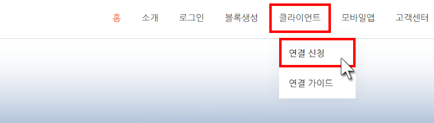
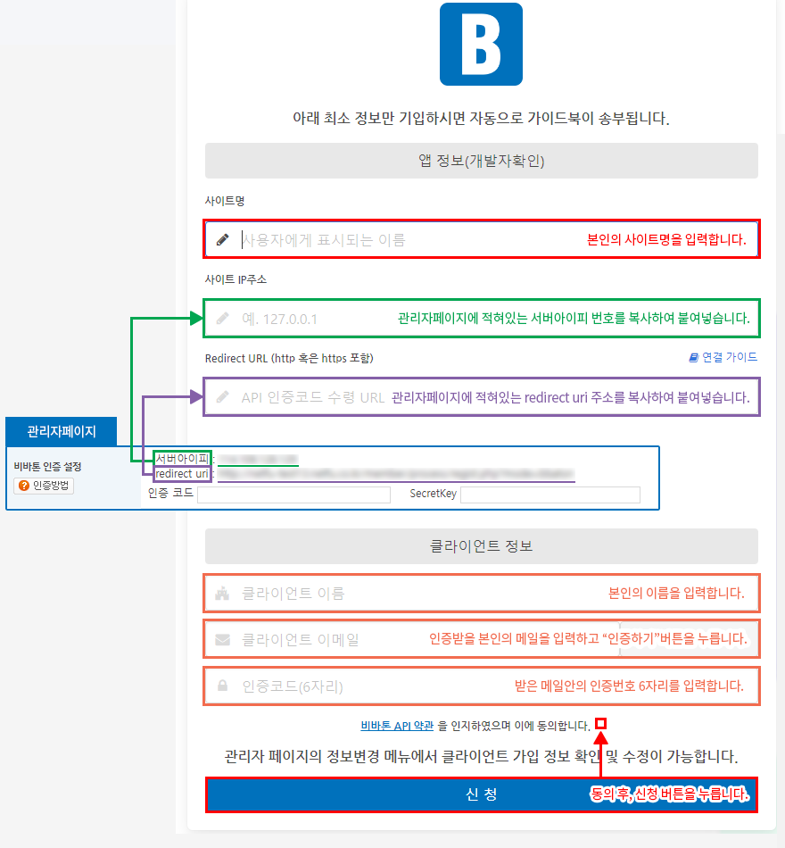
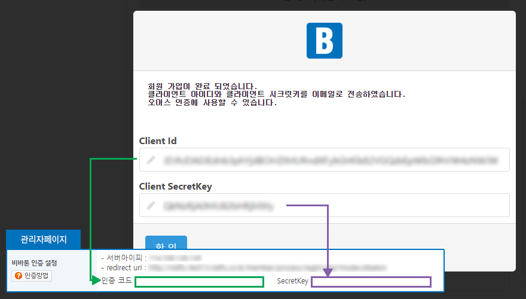

1 비바톤 홈페이지 접속
- 인터넷에 "비바톤"을 검색하여 홈페이지에 접속합니다.
- 메뉴의 "클라이언트 - 연결신청"에 들어갑니다.

2 연결신청 페이지에서 정보 작성
- 사이트 IP주소와 Redirect URL은 관리자페이지(환경설정>기본환경설정>비바톤 인증설정)에서 확인 가능합니다.

3 비바톤 ID 및 SecretKey 확인
- "신청"버튼을 누르면 비바톤 ID 및 SecretKey를 알려주는 창이 뜹니다. (등록한 이메일로도 ID와 SecretKey를 받을 수 있습니다.)
- ID는 관리자페이지의 "인증코드"란에 작성하고, SecretKey는 SecretKey영역란에 복사하여 붙여줍니다.
- 모두 작성하였으면 맨 하단의 "저장하기"버튼을 눌러줍니다.
